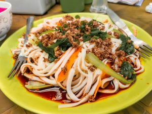

Keema noodles recipe:
Here's a recipe for Keema noodles:
Ingredients:
- 2 cups all-purpose flour
- 3/4 cup warm water
- 1/2 tsp salt
- 1 lb ground lamb or beef
- 8 oz egg noodles
- 1 onion, chopped
- 2 cloves garlic, minced
- 1 tsp ginger, grated
- 2 tbsp vegetable oil
- 1 tbsp tomato paste
- 1 tbsp garam masala
- 1 tsp ground cumin
- 1/2 tsp ground turmeric
- Salt and pepper to taste
- Chopped cilantro, for garnish
Instructions:
- Cook the noodles according to package directions. Once done, drain and set aside.
- In a large skillet, heat the oil over medium-high heat. Add the chopped onion and cook until softened,
about 3-4 minutes.
- Add the garlic and ginger to the skillet and cook for an additional minute.
- Add the ground beef or lamb to the skillet and cook until browned and cooked through, breaking it up
into small pieces as it cooks.
- Add the cumin powder, coriander powder, garam masala, chili powder, and salt to the skillet and stir
well.
- Add the chopped tomatoes, cilantro, and green chili (if using) to the skillet and stir to combine.
- Cook for an additional 5-7 minutes, stirring occasionally, until the tomatoes have softened and the
mixture has thickened.
- Add the cooked noodles to the skillet and toss to combine with the keema mixture.
- Add the butter to the skillet and stir until melted and well combined.
- Serve hot and enjoy your delicious Keema Noodles!